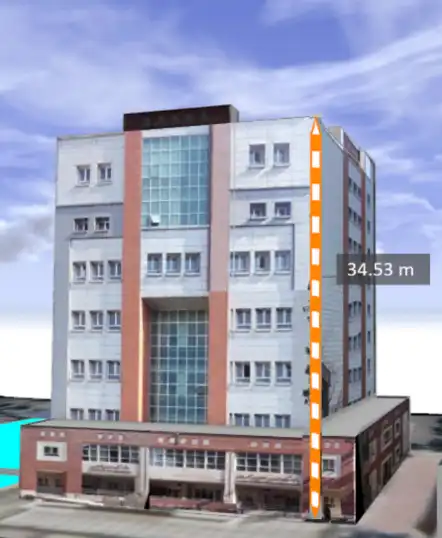

-

Ali Khosravi Kazazi
Shahid Rajaee University
-

Farhad Hosseinali
Shahid Rajaee University
Shahid Rajaee University
Shahid Rajaee University
The world population growth increases the importance of 3D city models because these models make some essential spatial analyses possible such as visualization, navigation, emergency responses, disaster management, and urban planning. 3D city models which were created based on common standards like CityGML are almost generally comprehensive. However, the quality, capability, and precision of 3D city models depend on their input data. Traditional and commercial 3D data-capturing methods that meet quality criteria are expensive and time-consuming. Technological developments and new internet-based tools have provided a platform to capture spatial data by the participation of the public and volunteers. These participations are known as Volunteered Geographic Information (VGI). VGI is strongly welcomed by researchers and developers as today's multiple projects such as OpenStreetMap not only work with two-dimensional data but also capture 3D data produced by the volunteers.
In this research, the goal is to use VGI to collect the required data for 3D city modeling based on the well-known CityGML standard. Thus, a mobile application connected to a server was developed. We used image processing algorithms such as SIFT, Canny, and RANAC for image matching, edge detection, and vanishing point recognition respectively. Images transformed to a ground coordinate system. Finally, acquired textures via VGI are assigned to the 3D model.
In order to evaluate the proposed method, a 3D model of a building, the most important part of a 3D city model by VGI, in Shahid Rajaee University was created. The building height was calculated at 53.34 meters. For elevation accuracy control, the building height was measured by ground-based operations. The building height based on this method was 34.44 meters. According to defined the level of detail on the CityGML standard, the required precision to create a 3D model in the fourth level of detail is 20 cm. So, details can be obtained through volunteered information and images in the 3D model of the building with the fourth level of details.
According the study's results, the calculated building height is only 9 cm different from the exact height of the building obtained through the surveying operation. This difference is less than 20 centimeters which is the required accuracy for the fourth level of detail in 3D modeling. This suggests that through the proposed method, the 3D model of the building could be achieved through VGI at the fourth level of details. In addition to being an affordable method for creating a 3D city model, using VGI is a fast way to collect various information. In further studies, it is proposed to use machine learning and deep learning techniques to automate the process of creating a 3D model from volunteered geographic information in order to complete and develop this approach.

Height measurment using a single photo
Merging two images
Edge detection

Vanishing points
The building's models
Ground truth of the building